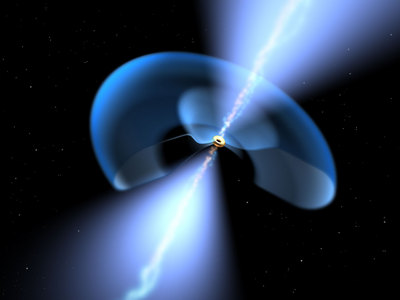

With the exception of the short-lived, powerful explosions responsible for supernovae and gamma-ray bursts, quasars (or QSOs) are the brightest objects in the Universe.
They are thought to be powered by supermassive black holes (black holes with a mass of more than one billion solar masses) which lie at the center of massive galaxies. However, the black holes themselves do not emit visible or radio light (i.e. they are “black”) – the light we see from quasars comes from a disk of gas and stars called an accretion disk, which surrounds the black hole. Intense heat and light is emitted from this accretion disk, caused by friction produced from the material swirling around, and eventually into, the black hole. Quasars are typically more than 100 times brighter than the galaxies which host them! Quasars also emit jets from their central regions, which can be larger in extent than the host galaxy. When a quasar jet interacts with the gas surrounding the galaxy, radio waves are emitted which can be seen as “radio lobes” by radio telescopes.

Credit: ESA/NASA, the AVO project and Paolo Padovani
Even though quasars are intrinsically very bright, we cannot see any quasars in the night sky without using a telescope. This is because the nearest quasars are more than a billion parsecs away. They therefore appear relatively faint in the sky despite their large luminosities.
Quasars are very compact objects – the word “quasar” and the acronym “QSO” are short for “quasi-stellar radio source” and “Quasi-stellar object” respectively, due to their ‘star-like’ appearance. Quasars were originally discovered with radio telescopes in the 1950s – hence the “r” in “quasar”. It was not until the 1960s that their optical counterparts were faithfully detected and shown to lie at cosmological distances from our own Galaxy: emission features in the optical spectrum of the quasars where systematically shifted towards the red end of the spectrum (“redshifted”) compared to where they ought to lie.
Many alternative explanations for the observed redshift of quasars were postulated in the 1960s before it was eventually attributed to the stretching of the light waves as they traveled to Earth through the expanding Universe. This is referred to as cosmological redshift. The higher the redshift, the more distant the quasar; the more distant the quasar, the longer the light has been traveling to Earth and the further back in time we are looking when we detect the quasar light with telescopes.
In addition to studying the quasars themselves, many astronomers use quasars as background light sources to study the intervening galaxies and diffuse gas. This is referred to as “absorption spectroscopy” because the intervening material is detected only because it absorbs some of the quasar’s light as it travels to Earth. Quasars are ideal for this purpose since they are very compact point-sources (“quasi-stellar”) on the sky and are so bright that they can be seen through telescopes at enormous distances. Indeed, quasars are among the most distant objects known. They therefore allow astronomers to study details of distant galaxies far too faint to be seen directly.
Quasar emission can only last as long as there is fuel available to form an accretion disk. Quasars can consume up to 1000-2000 solar masses of material per year, and have typical lifetimes of around 100-1000 million years. Once they have exhausted their fuel supply, the quasar will “turn off”, leaving the much fainter host galaxy.
As of 2007, more than one hundred thousand quasars are known.